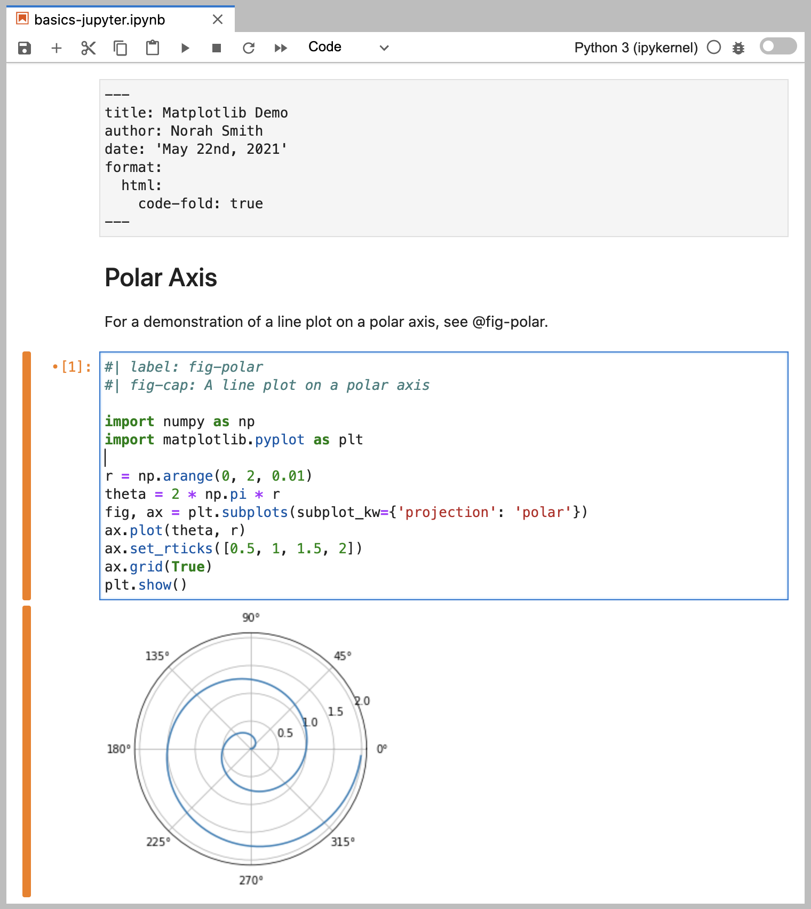
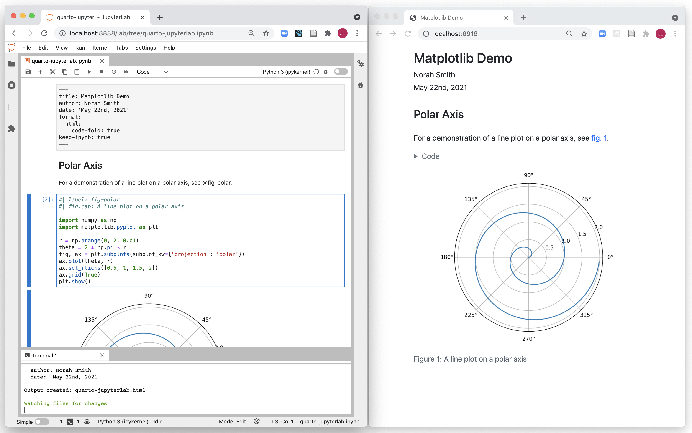
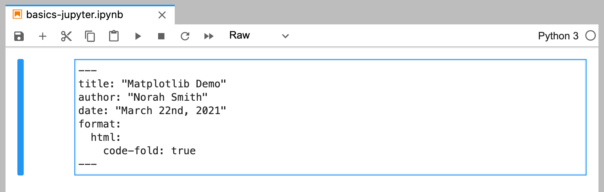
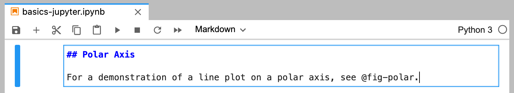
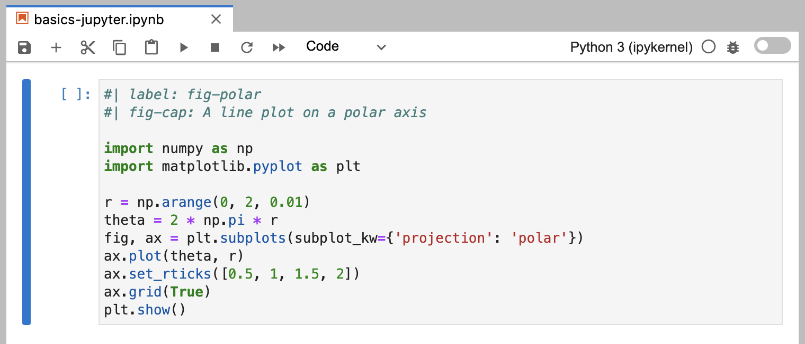

Code
import numpy as np
import matplotlib.pyplot as plt
r = np.arange(0, 2, 0.01)
theta = 2 * np.pi * r
fig, ax = plt.subplots(
subplot_kw = {'projection': 'polar'}
)
ax.plot(theta, r)
ax.set_rticks([0.5, 1, 1.5, 2])
ax.grid(True)
plt.show()
This is a Jupyter Notebook embedded in a Quarto book. You can write code, run it, and see the results directly in the book.
Quarto can render Jupyter notebooks represented as plain text (.qmd) or as a normal notebook file (.ipynb). One benefit of using .ipynb is that you can use JupyterLab as your editor.
Here is the “Hello, Quarto” example from the homepage inside JupyterLab:

If you look at the source code you’ll note that YAML options were provided both at the top of the document and within the code cell. We’ll describe working with YAML options in more detail below.
The ideal workflow for authoring Quarto notebooks in JupyterLab is to run the quarto preview command from within a terminal:
Terminal
quarto preview notebook.ipynbThe notebook will be rendered and a web browser with a “live preview” opened. Position this browser so that you can see it as you edit and save the notebook:

Every time you save within JupyterLab the preview will be automatically updated. You can use quarto preview for both HTML and PDF output.
In the screenshot above you’ll note that we ran quarto preview inside a JupyterLab terminal window—this is generally recommended so that you can see progress and error messages when renders occur.
Preview uses the default format specified within the document—to use an alternate format pass the --to option to quarto preview. For example:
Terminal
quarto preview notebook.ipynb --to pdfNote that if you are authoring a book or website you can also use quarto preview on the project directory, which will create a live preview for the entire project.
To run JupyterLab, invoke the jupyter module from within the shell where you are using Quarto:
| Platform | Command |
|---|---|
| Mac/Linux | Terminal |
| Windows | Terminal |
You can render a notebook (or group of notebooks) without previewing them using the quarto render command:
Terminal
quarto render notebook.ipynbUse the --to argument to render to a specific format:
Terminal
quarto render notebook.ipynb --to docxNote that the target file (in this case notebook.ipynb) should always be the very first command line argument.
The Quarto JuptyerLab extension enables JupyterLab Notebooks which use Quarto markdown to properly display the contents of the markdown cells. For example, when the Quarto JupyterLab extension is installed, your Notebook will show rendered previews of elements like Callouts, Divs, Mermaid charts, as well as other Quarto elements (including the document front matter as a title block).
You can read more about installing the extension in the Quarto JupyterLab Extension documentation.
The first cell of your notebook should be a Raw cell that contains the document title, author, and any other options you need to specify. Note that you can switch the type of a cell to Raw using the notebook toolbar:

In this example we specify that we want code to appear collapsed by default. There are YAML options to control many other aspects of document rendering. See the documentation on Authoring and Output Formats for additional details.
Here’s the underlying code for the markdown cell:

Note that a Quarto cross-reference (@fig-polar) is included in the markdown. Any valid Pandoc markdown syntax can be included in markdown cells.
Quarto uses leading comments with a special prefix (#|) to denote cell options. Here we specify the label and fig-cap options so that the plot generated from the cell can be cross-referenced.

Note that options must appear at the very beginning of the cell. As with document front-matter, option names/values use YAML syntax.
There are many output options available, including options to optionally hide code, warnings, and/or output. See the documentation on Output Options for additional details.
Note that when rendering an .ipynb Quarto will not execute the cells within the notebook by default (the presumption being that you have already executed them while editing the notebook). If you want to execute the cells you can pass the --execute flag to render:
Terminal
quarto render notebook.ipynb --executeYou can also specify this behavior within the notebook’s YAML front matter:
notebook.ipynb
---
title: "My Notebook"
execute:
enabled: true
---There are many other execution options available (e.g. to control caching, optimizing kernel start-up time, etc.). Learn more about these options in Execution Options.
It’s also possible to edit Jupyter notebooks in a plain-text markdown format. You might prefer this if there is more narrative than code in your notebook or if you want to use a file format that is more version control friendly.
Here is the plain text markdown version of the notebook used in the previous examples:
---
title: "Matplotlib Demo"
author: "Norah Smith"
date: "5/22/2021"
format:
html:
code-fold: true
jupyter: python3
---
## Polar Axis
For a demonstration of a line plot on a polar axis, see @fig-polar.
```{python}
#| label: fig-polar
#| fig-cap: "A line plot on a polar axis"
import numpy as np
import matplotlib.pyplot as plt
r = np.arange(0, 2, 0.01)
theta = 2 * np.pi * r
fig, ax = plt.subplots(subplot_kw={'projection': 'polar'})
ax.plot(theta, r)
ax.set_rticks([0.5, 1, 1.5, 2])
ax.grid(True)
plt.show()
```Note that we’ve added the jupyter: python3 option to the YAML front matter to indicate which Jupyter kernel to render with. You would render this document with:
Terminal
quarto render basics-jupyter.qmdMarkdown files with embedded code chunks should use the file extension .qmd.
If you are doing most of your work in .qmd files you should consider using RStudio, which includes full support for editing .qmd files that use Python and Jupyter (including code completion, cell-at-a-time execution, and side-by-side preview). See the article on using RStudio for additional details.
You can convert between .ipynb and .qmd representations of a notebook using the quarto convert command. For example:
Terminal
quarto convert basics-jupyter.ipynb # converts to qmd
quarto convert basics-jupyter.qmd # converts to ipynbSee quarto convert help for additional details on converting notebooks.
You can use Jupytext to maintain parallel synchronized versions of .qmd and .ipynb files. Learn more about Jupytext at https://jupytext.readthedocs.io/en/latest/.
For a demonstration of a line plot on a polar axis, see Figure 15.1.
import numpy as np
import matplotlib.pyplot as plt
r = np.arange(0, 2, 0.01)
theta = 2 * np.pi * r
fig, ax = plt.subplots(
subplot_kw = {'projection': 'polar'}
)
ax.plot(theta, r)
ax.set_rticks([0.5, 1, 1.5, 2])
ax.grid(True)
plt.show()